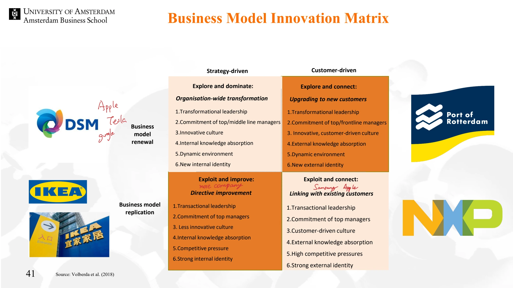

The framework
Source of change →
Strategy-driven
Customer-driven
Renewal / exploration
Explore and dominate
Explore and connect
Replication / exploitation
Exploit and improve
Exploit and connect
| Route | Core change | Supporting conditions in the lecture |
|---|---|---|
| Explore and dominate | Strategy-driven renewal: organization-wide transformation. | Transformational leadership; top and middle management; innovative culture; internal knowledge absorption; a new internal identity. |
| Explore and connect | Customer-driven renewal: upgrading to new customers. | Transformational leadership; top and frontline management; innovative customer-driven culture; external knowledge absorption; a new external identity. |
| Exploit and improve | Strategy-driven replication: directive improvement. | Transactional leadership; top management; internal knowledge absorption; competitive pressure; a strong internal identity. |
| Exploit and connect | Customer-driven replication: linking with existing customers. | Transactional leadership; top management; customer-driven culture; external knowledge absorption; high competitive pressure; a strong external identity. |
Key distinctions
Direction and mode are separate choices
Customer-driven does not necessarily mean incremental, and strategy-driven does not necessarily mean radical. Either orientation can accompany replication or renewal. Use both axes when describing the transformation.
From a desired model to an organizational route
The matrix helps connect a proposed model with the way change is mobilized. It asks which managerial levels should be involved, where knowledge will come from and which identity or cultural characteristics might support the route.
How to use it
- Define whether the intended change is mainly replication or renewal.
- Clarify whether the direction is primarily strategy-driven or customer-driven.
- Check leadership, managerial commitment, knowledge absorption and identity against the chosen route.
Keep in mind
A firm can move between routes or combine them. The matrix does not prescribe a single universal sequence.
Which route links renewal with new customers?
Reveal the explanation
Explore and connect.
Read the classroom original
Complete pages from the supplied lecture slides. Select a page to read, enlarge or browse its extracted text. Page numbers refer to the PDF’s physical page order.
